<<2012年9月 | トップページ | 2012年11月>>
2012年10月
【乗りすけFile】 No.51：自走ラップマシーン（１０月３１日放送）
乗りすけFile No.51：自走ラップマシーン（１０月３１日放送）

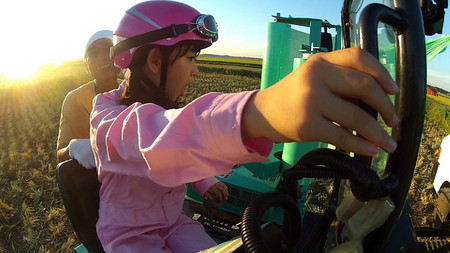

全長：3m04cm
全高：2m06cm
全幅：1m66cm
重量：1180kg
価格：約325万円
飼料収穫機（乗りすけFile No.50）が成形したロール状の飼料にラッピングを施す農業機械「自走ラップマシーン」。収穫された飼料用作物はビニール製のフィルムでラッピングし、1ヶ月以上発酵させることにより家畜の餌となる。
300㎏を越えるロール飼料は人力では持ち上げることすら困難なため、ラッピングするためには必要不可欠な機械である。前方からロールを拾い上げ、ラッピングしながら搬送、トラックへの積込み作業までこの1台でできる。
最高速度は約6km/h。全自動で行われるラッピングは2本のフィルムによるダブルストレッチ方式。素早く包み込み、台全体の横回転とコンベアによる縦回転で飼料のロール全体を隙間なく完全密閉する。
これまでの【乗りすけFile】はこちら
投稿者:大天才テレビジョン社員３号 | 投稿時間:18時42分 | カテゴリ：乗りすけさん | 固定リンク


 " title="ソーシャルブックマークについて">
" title="ソーシャルブックマークについて">
※NHKサイトを離れます。
【てれび戦士プロデュース室】てれびちゃんまさかの敗戦！
みなさんこんにちは。
てれび戦士プロデュース室の通称「あなた」ことあなたです。
本日放送のてれび戦士プロデュース室はいかがでしたか？「ザ・ベスト１０」で１位を獲得し、ようやくアイドル戦国時代を戦い抜く準備は出来ていたと思っていたのですが、結果はご覧の通り。１勝２敗で惜しくも敗れてしまいました。
この結果は出川さんも重く受け止めていたようです。今後何らかの「てれびちゃん強化策」が打ち出されるかもしれません。
対戦相手のKGY40Jr.は千葉県鎌ヶ谷市のご当地アイドル。
普段は、地元のショッピングセンターの一角を勝手に「KGY40Jr.劇場」と名付けて公演を行っているほか、月に１度は東京・渋谷でもライブ活動を行っています。
ちなみに最後の「GOOD MORNING KAMAGAYA」の曲の中で、おじさんがひたすら合いの手を入れていて気になった方も多いかと思います。
あの人は「皮茶パパ」という名前で、「KGY40Jr.」の作詞、作曲、プロデュースを務める偉い人です。決して彼女たちが歌うのを邪魔しているわけではないので、あしからず。実は皮茶パパの合いの手がKGYのライブの恒例になっていて、これを楽しみに来ている人もいるとかいないとか、なのだそうです。
なお、先日より、「てれび戦士プロデュース室」のページに、４月からこれまでの「てれびちゃん年表」を作っておりますので、こちらもご覧頂ければと思います。

※戦いを終えて和気あいあいの両軍
投稿者:大天才テレビジョン社員１号 | 投稿時間:18時30分 | カテゴリ：てれび戦士プロデュース室 | 固定リンク
" title="ソーシャルブックマークについて">
※NHKサイトを離れます。
【５年前の私】金子隼也
５年前の僕、ちょうど小学１年生。
サッカー大好きなのは今でも変わってないかな。
学校から帰ると玄関にランドセルを置いて遊びに行く、そしてその後サッカーの練習って日々でした。
さすがに玄関に荷物を置いて遊びには行かないけど。
あっ！
最近、夜は肌寒くなってきました。寒くなると「焼きイモ」食べたくなりますよね。黄金色の焼きイモ、最高！今も大好きです。
焼きイモ屋さん、来ないかなぁー。
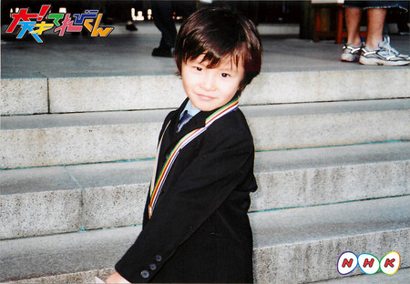
投稿者:金子隼也 | 投稿時間:18時00分 | カテゴリ：We are 大天才テレビジョン | 固定リンク
" title="ソーシャルブックマークについて">
※NHKサイトを離れます。
【大天才テレビショッピング】～本革製秋刀魚鞄～
「大天才テレビショッピング」１１回目の放送はご覧いただけたでしょうか。
今回ご紹介したのは、大天才テレビジョン商品開発部が総力を挙げて開発した「本革製秋刀魚鞄」です。
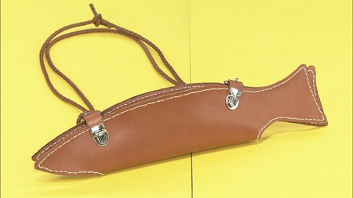
旬をむかえた秋の味覚「秋刀魚」をスタイリッシュに持ちはこべる専用バッグ。
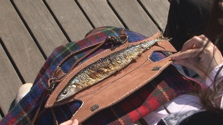
世界で唯一の魚類専用革鞄職人に完全オーダーメイド！
いつでもどこでも食卓をゴージャスに演出。
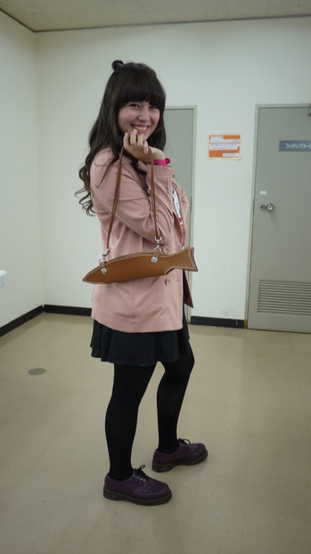
※モデル：寺田朱里さん
詳細については、 「大天才テレビショッピング」のページ をご覧ください。
どうぞよろしくお願いいたします。
投稿者:大天才テレビジョン社員３号 | 投稿時間:18時46分 | カテゴリ：大天才テレビショッピング | 固定リンク
" title="ソーシャルブックマークについて">
※NHKサイトを離れます。
【運動会の思い出】鎮西寿々歌
運動会といえば！
やっぱりーーーー
お弁当！！笑
運動会の時のお弁当大好きなんですよ♪
日陰で家族と食べるんですよねー。
運動会のお弁当は豪華！
種類豊富！
量も多い！
毎日運動会だったらいいのにー、と小学校の頃思ってました。笑
あとは…
あっ！応援団ですねっ♪
5年生の時に応援団をしたんです！
その時は赤組で
結果は同点。笑
でも、応援のダンスをみんなで一緒懸命フリを考えて、踊りました♪
曲はこち亀の曲でした！
うちの中では、中学校の運動会よりも小学校の運動会の方が、練習が長い分、より思い出として残っています！
投稿者:鎮西寿々歌 | 投稿時間:18時30分 | カテゴリ：We are 大天才テレビジョン | 固定リンク
" title="ソーシャルブックマークについて">
※NHKサイトを離れます。
【運動会の思い出】島田太一
えとぉ
運動会の思い出は、黄色組の応援団になれた事です。
しかも応援団長になったことです。
団長は、低学年の時からあこがれてて、なった時はものスゴくうれしかったです。
色々、責任がある任務をしたり、黄色組をまとめたりして大変でした。
で、結果は4位中2位でした！！！
この結果は、うれしいのか、悔しいのかわかんなかったです（笑）
投稿者:島田太一 | 投稿時間:18時00分 | カテゴリ：We are 大天才テレビジョン | 固定リンク
" title="ソーシャルブックマークについて">
※NHKサイトを離れます。
【運動会の思い出】長谷川ニイナ
こんにちは～！！長谷ニイで～す★
私の「今年の運動会の思い出」は・・・。
引き分けになったことです！
引き分けってよく言うけど本当なのかなぁと思っていたんですけど、
本当なんですネ～！ビックリしました！
後、やっぱり運動会といえば、「お弁当」！！！
いっぱい運動した後のご飯ってもう最高ですよね。たまりません！
その中でも、「中華ちまき」は最高でした♪
私のおばさんが、モッチモチの中華ちまきを幼稚園の時につくってくれて、とってもおいしかったです。
おばさん、ありがとうございます！
来年はどんな運動会になるのかな～？楽しみでーす！
投稿者:長谷川ニイナ | 投稿時間:18時00分 | カテゴリ：We are 大天才テレビジョン | 固定リンク
" title="ソーシャルブックマークについて">
※NHKサイトを離れます。
【運動会の思い出】ソーズビー航洋
今年は出れなかったんで、昨年のことを書きまーす( ^ω^ )/
まずぼくは、運動はまぁまぁとくいだけど、足がおそいんです（苦ｗｗ)
でも１００ｍ走では、１位だったんでーーーーーーーーーーーーす！！
しかもぼくは１番とおいコースだったんです！
れんしゅうは３位とかばっかりだったのに、たまたま１位だったんです！
めっツァうれしかった(o^∇^o)
組体操。
もちろん下。ｗｗ
そのうえ全部。ｗｗ
そのうえ２人技はほとんど背の同じ子とやったんですｗｗ 意外にかるい・・・ｗｗ
きばせん。
下。ｗｗ
ホントウは上が良かったんです！
でも下も思ったより楽しかったです(^∇^)ﾉ
で、紅白たいけつだったんですが（ぼくは赤！）
赤組の～カチーーーーーー！！イエーイ！
とってもうれしかったでーす♪
・・・でも。くみたいそうは、体操着がよごれることが不満でした。ｗｗ
KOYO.S
投稿者:ソーズビー航洋 | 投稿時間:18時00分 | カテゴリ：We are 大天才テレビジョン | 固定リンク
" title="ソーシャルブックマークについて">
※NHKサイトを離れます。
【乗りすけFile】 No.50：飼料収穫機
乗りすけFile No.50：飼料収穫機 （１０月２４日放送）

全長：7m30cm
全高：2m75cm
全幅：2m36cm
重量：5190kg
価格：約1800万円
トウモロコシ、飼料イネ、牧草など家畜の飼料用の作物を収穫し、ロール状に成形して放出する「飼料収穫機」。飼料作りには欠かせない農業機械。平均作業速度は約３km/h。車両前部のローラーにより前進しながら稲を引き込むことが可能。刈られた稲は後部の成形室にてロール状に成形、仕上げに網で巻いて放出される。作物を刈りながらロール成形が同時にできるため、作業効率も高く、自給飼料生産拡大にも貢献している。
これまでの【乗りすけFile】はこちら
投稿者:大天才テレビジョン社員１号 | 投稿時間:18時42分 | カテゴリ：乗りすけさん | 固定リンク
" title="ソーシャルブックマークについて">
※NHKサイトを離れます。
【運動会の思い出】寺田朱里
こんにちわ。
運動の秋だねぇー！！運動といえば運動会！
でも私はインターナショナルスクールだったから運動会が無かったのー。
きゃーんー！でも！その代わりね！真冬にマラソン大会があった！！
学年でマラソンをして、３位から１位を決めるの！
ベスト３に入った人メダルがもらえたのよー！！私は当然その中には入ったことないけども。ふふふ。
そう！しかもそのマラソン大会！走るのは生徒だけじゃないの。先生達も走ったんだよー！
何人かサンタの格好をしてたよ！だからとっても愉快なマラソン大会なのー！
そういえば・・・。
一人の先生がカラスに追いかけられていたの覚えてる！
印象深い記憶だ！あ！もちろん、その先生は助かったよー！
じゃー！See youー！なはーん。
※これは運動会あったころの朱里さんの様子
投稿者:寺田朱里 | 投稿時間:18時00分 | カテゴリ：We are 大天才テレビジョン | 固定リンク
" title="ソーシャルブックマークについて">
※NHKサイトを離れます。
【運動会の思い出】黒澤美澪奈
こんにちは(^0^)/ みれなです！！
運動会で一番の思い出に残っているのは、 『よさこいソーラン♪』です
全員で、"なるこ"を持っておどりました～ みんなで息を合わせておどると、とっても気持ちがいいし、カッコいいんです☆
なるこの「カシャカシャカシャ」という音がそろうと、 もっと気持ちがいいです(^^)
おどりを覚えたりするのは、時間がかかったけど、100％の力を出して、バッチリキメました～☆
投稿者:黒澤美澪奈 | 投稿時間:18時00分 | カテゴリ：We are 大天才テレビジョン | 固定リンク
" title="ソーシャルブックマークについて">
※NHKサイトを離れます。
【運動会の思い出】竹原司
こんにちは！！
秋は運動会の季節ですね！
でも僕の学校は５月に運動会をやるので運動会は春って感じですね～＾０＾
運動会の思い出はいろいろあるけど、今年の思い出はお昼ご飯を食べすぎて、８０メートル走でビリになった事です。
なんと練習では２位だったのにビリになってしまいました。
やっぱり太ったからですかね～。昔はガリガリだったんですよね～！
本当ですよ！！
この写真、僕ですよ！！
運動会でも１位でした。
ダイエットしようかな～と思うけれど・・・・・・
じゃあ、さようなら！！バイバイ。
投稿者:竹原司 | 投稿時間:18時00分 | カテゴリ：We are 大天才テレビジョン | 固定リンク
" title="ソーシャルブックマークについて">
※NHKサイトを離れます。
【運動会の思い出】延命杏咲実
どーも！延命で～す♪
私のうん動会の思い出は、今年もまた負けた事です。
私の学校は赤と白にわかれていて、毎年私が入る方が負けちゃうんです・・・。
ずっと大声を出しておうえんしてるのに・・・。
今年はリードもしたのに、さいごのしゅもく「大玉おくり」でぎゃくてんがちされてしまいました・・・。
ちなみに今年は赤組でした。
でも、気持ちをかえて、来年こそはぜったいにかつぞ！
投稿者:延命杏咲実 | 投稿時間:19時00分 | カテゴリ：We are 大天才テレビジョン | 固定リンク
" title="ソーシャルブックマークについて">
※NHKサイトを離れます。
【運動会の思い出】浅賀玲音
どうも！れおです
今日は運動会の思い出
ということで...
小6の時の
運動会の思い出について
話させていただきます
小6の時の運動会で
1番思い出があるのが
組体操です！
組体操練習の日に
最後の1番大きな
タワーを作るときに
誰が1番上になるかという
話しになったとき、
じゃあ軽いから浅賀行け
的なノリになって
やってみたら...
ちゃんとできたんです！
それで、
本番も成功するかドキドキ
だったのですが...！
見事成功しましたあああ！
いやー！嬉しかった！
小学生として最後の運動会
の最高の思い出でした！

ではでは！
投稿者:浅賀玲音 | 投稿時間:18時00分 | カテゴリ：We are 大天才テレビジョン | 固定リンク
" title="ソーシャルブックマークについて">
※NHKサイトを離れます。
【乗りすけFile】 No.49：野外炊具１号（改）
乗りすけFile No.49：野外炊具１号（改）
（１０月１７日放送）


全長：4m59cm
全高：2m74cm
全幅：2m31cm
重量：約2500 kg
野外で調理するための陸上自衛隊の特殊車両「野外炊具１号（改）」。トラックに牽引されて移動する。
食事の調理が困難な被災地などで主に活躍。大型コンロ６台、万能調理器２台を搭載、約２００人分の主食・副食を約１時間で同時調理できる。
１台につき６名の隊員で作業、２０分で炊飯(蒸らし時間は別)が完了する。牽引走行中でも炊飯が可能だ。
これまでの【乗りすけFile】はこちら
投稿者:大天才テレビジョン社員１号 | 投稿時間:14時45分 | カテゴリ：乗りすけさん | 固定リンク
" title="ソーシャルブックマークについて">
※NHKサイトを離れます。
【乗りすけFile】 No.48：走る台車
乗りすけFile No.48：走る台車（１０月１０日放送）

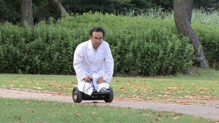
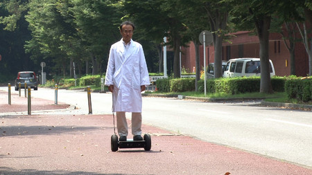
全長：36cm
全高：60cm
全幅：55cm
重量：約12kg
定員：1名
体重移動で操縦する一人乗り台車。台車の四隅に装備された力センサーが、乗員の足の裏の力を感知する。後進も可能。最高速度は徒歩より早い５km/h。
バッテリーを２個内蔵し、充電１時間で２時間走行する。
最大搭載重量は１００kg。荷物を搭載し、リモコンで操縦することもできる。
最大１０度までの坂なら登ることも可能だ。
これまでの【乗りすけFile】はこちら
投稿者:大天才テレビジョン社員１号 | 投稿時間:14時44分 | カテゴリ：乗りすけさん | 固定リンク
" title="ソーシャルブックマークについて">
※NHKサイトを離れます。
【乗りすけFile】 No.47：ブローカート
乗りすけFile No.47：ブローカート（９月２６日放送）
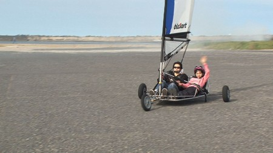

全長：約2m80cm
全高：約1m70cm
全幅：約5m50cm
重量：約27kg
価格：約57万円～
三輪の車両に帆を張り、風を受けて走行する「陸上のヨット」。
ハンドルと、帆の張り具合を調整するロープで操縦する。乗車姿勢は風の抵抗を軽減するため寝そべる体勢に近い。風向きを確認するために、操縦席には風向計を装備している。最高速度は風速によるが約６０km/h。ヨットと同様、ジグザグ走行で風上に進むことも可能である。
なお、コーナリング時に転倒することがあるが、金属製のフレームとシートベルトにより運転者の安全は確保されている。
これまでの【乗りすけFile】はこちら
投稿者:大天才テレビジョン社員１号 | 投稿時間:14時30分 | カテゴリ：乗りすけさん | 固定リンク
" title="ソーシャルブックマークについて">
※NHKサイトを離れます。
【運動会の思い出】山田陶子
間違い探し・・・・・。
右手と右足一緒に出ちゃってますね・・・。
３年生の時ですね・・・。
気が付いて直しました。
そしたら・・・。
今年、選抜リレーの選手に選ばれました。
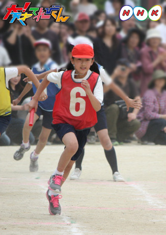
いぇ―い！！！！！！！！！！
では、さようなら！
投稿者:山田陶子 | 投稿時間:18時00分 | カテゴリ：We are 大天才テレビジョン | 固定リンク
" title="ソーシャルブックマークについて">
※NHKサイトを離れます。
【運動会の思い出】長江崚行
あの頃は、純粋な心のままで運動会を楽しんでたなぁ…(笑)
小学校の運動会って、踊ったりするじゃないですか？
そういう時って、恥ずかしいー！って思う子とかもいるじゃないですか？
僕です。(笑)
こういう踊ったりするのは恥ずかしくなってしまうんですねぇ…
今は治って、人前に出るのは大好物ですけど(笑)
写真は、少し昔の僕。
中学入ってからは、運動会で写真を撮る事があまりなかったのですよー！
んbye！⊂(^_^)⊃
RYO-KI
投稿者:長江崚行 | 投稿時間:18時00分 | カテゴリ：We are 大天才テレビジョン | 固定リンク
" title="ソーシャルブックマークについて">
※NHKサイトを離れます。
【ドウブツカメラ！】視聴者応募スペシャル（撮影：金子）
１０月１５日（月）「視聴者応募スペシャル」
今回の動物カメラマンは、金子隼也。ベストショットはこちら！
※画像をクリックすると大きな画像が開きます。
また、開いた画像を右クリックすると保存ができます。
撮影：金子隼也 『未来に羽ばたいて行け』
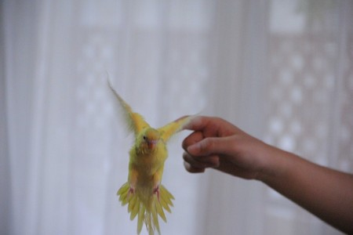
撮影：金子隼也 『初めまして』
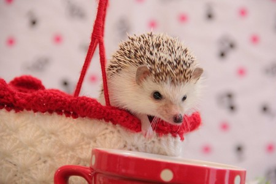
ロケ中のオフショットはこちら！
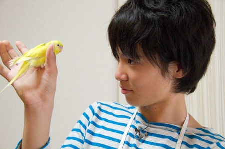
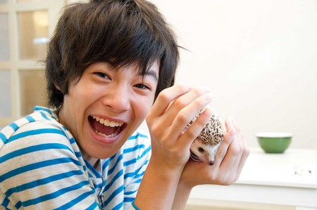
投稿者:大天才テレビジョン社員１号 | 投稿時間:18時45分 | カテゴリ：ドウブツカメラ！ | 固定リンク
" title="ソーシャルブックマークについて">
※NHKサイトを離れます。
【面白かった本】金子隼也
僕が、オススメする本は、サッカー選手の長谷部誠さん著書の「心を整える」、
王貞治さん、岡田武史さん著書の「人生で本当に大切な事」です！
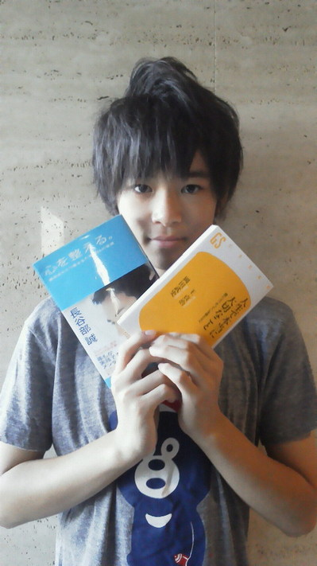
この２冊は、人生について深く書かれています！
『苦しい試練は神様の贈り物』『努力している姿は必ず誰かがみてくれている』など苦しい時に立ち向かっていくためのメッセージがたくさんありました。
僕も頑張らなきゃって勇気をもらえる本です。
それと最近読んでいるのは「僕とおじいちゃんと魔法の塔」のシリーズです。
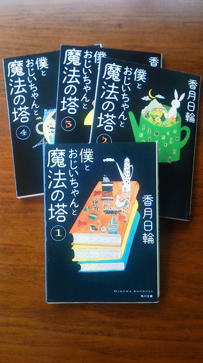
亡くなったおじいちゃんと兄弟のなかで出来の悪い男の子の物語。
ファンタジーあふれる本ではまってます！
学校のクラスにも担任の先生所有のたくさんの本が「〇〇文庫」と名付けられ貸してもらえます。
歴史の本やサスペンスなど借りて読んでいます！
投稿者:金子隼也 | 投稿時間:18時00分 | カテゴリ：We are 大天才テレビジョン | 固定リンク
" title="ソーシャルブックマークについて">
※NHKサイトを離れます。
【面白かった本】岡田結実
ゆーすけさんの『上地雄輔物語』。
私はこの本を読んで心の中からそんけいしました！！
いっぱい名言があって、そのなかで一番好きなのは・・・
「気楽に気楽に♪」
「気」分を「楽」に「気」合いを入れて「楽」しくいつまでも「に」こにこ♪
本当にこの話を読んで、ゆーすけさんみたいなやさしい人になろーと思います。
この本を読んでると目から汗が・・・！！
本当ーーーーーにゆーすけさんみたいに
自分の笑顔で人を元気にできるよーにがんばります。
めざす目標です！！
投稿者:岡田結実 | 投稿時間:13時30分 | カテゴリ：We are 大天才テレビジョン | 固定リンク
" title="ソーシャルブックマークについて">
※NHKサイトを離れます。
【面白かった本】長谷川ニイナ
こんにちは～（＾０＾） もう秋ですね！！
秋と言えば、読書の秋！という事で
私が印象に残っている本は・・・。
コチラ！！！
「犬と私の１０の約束」
お母さんに教えられた１０の約束をめぐる、犬と少女のお話です！
私も「ジンジャー」というアメリカン・コッカー・スパニエルの犬を飼っているので、
同感するところもあって感動しました！！
動物系のお話って、なんだか泣けてきちゃいますよね！
読み終えた後で、涙で顔がボロボロでした。
ジンジャー、死ぬまで一緒だよ～！！
投稿者:長谷川ニイナ | 投稿時間:18時00分 | カテゴリ：We are 大天才テレビジョン | 固定リンク
" title="ソーシャルブックマークについて">
※NHKサイトを離れます。
【面白かった本】黒澤美澪奈
こんにちは！！美澪奈です（＾０＾）/
今までで印象に残っている本は・・・
「小惑星探査機『はやぶさ』宇宙の旅」です！！
宇宙好きの私には、ぴったりの本です。
はやぶさの打ち上げ計画から、もえつきるまでのお話で
とても感動しました・・・！！
学校の休み時間に読んでいて、学校でも泣きそうになりました（泣）
はやぶさは、宇宙の中でまいごになったり、いろんな困なんがあったのに
技術者の人たちがあきらめないでがんばっていたのを見て、
あきらめないことの大切さを知りました★
２０１４年に、「はやぶさ２」が打ち上げられるので、
その時にも本を出してほしいなと思いました！！
投稿者:黒澤美澪奈 | 投稿時間:18時00分 | カテゴリ：We are 大天才テレビジョン | 固定リンク
" title="ソーシャルブックマークについて">
※NHKサイトを離れます。
【大天才テレビショッピング】～ウインぐつ～
「大天才テレビショッピング」１０回目の放送はご覧いただけたでしょうか。
今回ご紹介したのは、大天才テレビジョン商品開発部が総力を挙げて開発した
「ウインぐつ」です。
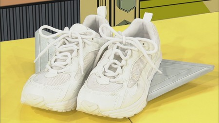

※モデル：ソーズビー航洋さん
詳細については、 「大天才テレビショッピング」のページ をご覧ください。
どうぞよろしくお願いいたします。
投稿者:大天才テレビジョン社員１号 | 投稿時間:18時45分 | カテゴリ：大天才テレビショッピング | 固定リンク
" title="ソーシャルブックマークについて">
※NHKサイトを離れます。
【面白かった本】鎮西寿々歌
こんにちはー(^ ^)
寿々歌ででででーーす☆
今回は
湊かなえさんの
「告白」という本を紹介します。
2010年に映画化されたのですが、年齢的に制限されていて、観に行けませんでした( ；´Д｀)
なので、文庫本を買って読んだら…
めっちゃ面白いいい！！
それぞれの登場人物の、思いや、すれ違い。
裏切りまで、人間のリアルさが生々しく描かれた作品でした！！
今まで読んだ本の中で1番リアルさがあったのが、うちにとって良かったのかなぁー、と思います♪
皆さんも
「告白」読んでみてください(^ ^)♪
あっ！本は何回も読んで、そのまま紛失しました。笑
投稿者:鎮西寿々歌 | 投稿時間:18時00分 | カテゴリ：We are 大天才テレビジョン | 固定リンク
" title="ソーシャルブックマークについて">
※NHKサイトを離れます。
【面白かった本】浅賀玲音
どうもー！れおです。
読者の秋ということで。
僕が印象に残った本は
「ママのおなかをえらんだわけは」です！
この本は実際に色んな
子供達が言った
""生まれてくる前""のコトがたくさん載っている本です。
その子達が言う言葉に
「本当にお腹にくる前は
こんなところにいるのかなぁ」とか、
色々考えさせられて、
とても面白いです！
皆さんもぜひ、読んでみてください！
投稿者:浅賀玲音 | 投稿時間:18時00分 | カテゴリ：We are 大天才テレビジョン | 固定リンク
" title="ソーシャルブックマークについて">
※NHKサイトを離れます。
【面白かった本】長江崚行
崚行ですよ。
僕は、『裏閻魔』という小説が印象に残ってます。
一番最初に買った小説であり、一番ハマった小説なんです。
描写とか、登場人物の感情とかに、読んでて興奮し出したりしました！
あと、表紙を夜中に見ると、一瞬驚いたり(笑)
じゃあねー(・Д・)ノ
投稿者:長江崚行 | 投稿時間:18時00分 | カテゴリ：We are 大天才テレビジョン | 固定リンク
" title="ソーシャルブックマークについて">
※NHKサイトを離れます。
【面白かった本】島田太一
グレッグのダメ日記という本です。
この本はグレッグというアメリカの男の子が、将来お金持ちで有名になった時に
色々記者に過去の質問に答えるのがめんどうなので、
この日記をわたして一発で解決する時のための本です。
その日記の中で面白い場面は、友人のロウリーとお金が無くて２人で家にお化け屋しきを作ったり、
雪かき、家の庭の草かり、サービスのしごとをして失敗して、
家族におこられる場面が一番おもしろかったです。
投稿者:島田太一 | 投稿時間:18時00分 | カテゴリ：We are 大天才テレビジョン | 固定リンク
" title="ソーシャルブックマークについて">
※NHKサイトを離れます。
【面白かった本】山田陶子
私、山田です。
山田がこれまで読んで最高に面白かった本は
・・・ジャン
「ヤマトシジミの食卓」です。
最初は本の表紙の絵がとってもかわいかったので、「読んでみよう」と思ったのがきっかけです。
内ようは、女の子が一人のおじいちゃんをひろって・・・
このつづきはあなたが読んでね！
↑
なんかかっこいいな！テレビみたい！！
ではでは、このへんで。
どうもありがとうございました。
※その本は図書館で借りたものだということで、今回の写真は山田さんが読書しているイメージです。
投稿者:山田陶子 | 投稿時間:18時00分 | カテゴリ：We are 大天才テレビジョン | 固定リンク
" title="ソーシャルブックマークについて">
※NHKサイトを離れます。
【面白かった本】ソーズビー航洋
Hello！Koyoです！
ぼくが印象に残っている本は、「そらからおかしがふってきた」です。
お母さんからのお古の本がい～っぱいあって、ある日いろいろ読んでたらこの本が出て来ました～♪
一少女の一日のお話です★
学校もようちえん児だから、自由で楽しそうだなぁと思いました。
まず少女の顔がゲキカワなんです！
マンションの下の公園で子どもたちが遊んでいて、大きな声で「ママおかしちょーだーい！！」って言うとマンションからおかしがふってくるんです！
字も大きいから、ぼくみたいに本が苦手な人も読みやすいです★
ユニークなお話で、思わずその世界に入りたい！って思うお話なので、ぜひ読んで下さい！！
KOYO.S
投稿者:ソーズビー航洋 | 投稿時間:16時07分 | カテゴリ：We are 大天才テレビジョン | 固定リンク
" title="ソーシャルブックマークについて">
※NHKサイトを離れます。
【面白かった本】竹原司
皆さん、こんにちは！・・・・・・・・・いや～、秋ですね～！
秋と言えば読書ですよね！
僕のおススメの本は「黒魔女さんが通る」の「黒魔女さんのシンデレラ」（４かん）が好きです。
おや・・・このアニメは大！天才てれびくんでやっているではないか！！
いや～たんなる、ぐうぜんです。
それにしてもすごいですね～！
このアニメは毎週水曜日にやっています！
この本は主人公のチョコがシンデレラのビデオの中に入ってしまって、ビデオの中でぼうけんをするというお話です。
僕はこの本をさいきんよみはじめました。
それでハマッチャイマシタよ！
では皆さんマタコンドー。
投稿者:竹原司 | 投稿時間:18時00分 | カテゴリ：We are 大天才テレビジョン | 固定リンク
" title="ソーシャルブックマークについて">
※NHKサイトを離れます。
ページの一番上へ▲